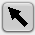
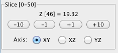

Region of Interest Tools, Data Plots and Statistics
Drawing and selection tools are available for spatial simulation results to create regions of interest>
Drawing Tools:

Selecting/Creating Regions of Interest (ROI):
Choose tool type from

selection,
point,
 line,
line,
 spline/curve,
spline/curve,
 add line/spline control point .
User created ROI line and points are gray when deselected; control nodes and points are white when selected.
Use the point, line or spline tools to create a ROI by clicking to add single points or extend line segmentsand.
An enclosed region ROI can be created with the line tool by overlapping the end point with the start point.
For data associated with ROI, see Statistics (below).
add line/spline control point .
User created ROI line and points are gray when deselected; control nodes and points are white when selected.
Use the point, line or spline tools to create a ROI by clicking to add single points or extend line segmentsand.
An enclosed region ROI can be created with the line tool by overlapping the end point with the start point.
For data associated with ROI, see Statistics (below).
Line tool -- Enables show spatial plot button which displays values of the selected variable along the line created with two successive clicks of the line tool.
Spline/Curve tool -- Creates a region of interest along the line and enables show spatial plot button. which displays values of the selected variable parametrically by distance along a spline curve defined by two or more successive clicks of the curve tool.
Deleting Points, Lines, or Curves
Use the selection tool
to select the item and then use either Backspace or the Delete key to delete it.
Select the
 Image Zoom: image magnification tool and drag the mouse across the image to
increase and decrease the image zoom.
Image Zoom: image magnification tool and drag the mouse across the image to
increase and decrease the image zoom.
 Pan Tool:
Use the pan tool, while the image is zoomed up, to move across the image. With the Hand icon depressed, hold down the left mouse button and drag the mouse across the image to move it.
Pan Tool:
Use the pan tool, while the image is zoomed up, to move across the image. With the Hand icon depressed, hold down the left mouse button and drag the mouse across the image to move it.
Slice
View 3-D data sets by using the Plus (+1/10) and Minus (-1/10) buttons to step through the series.
Axis
The Axis is provided as an additional means of viewing your 3-D image data.

Statistics
Spatial Plot: The Plot->Spatial menu item is enabled once you use the line or spline tools to define a region.
Select the created line or spline, select Plot->Spatial to display a plot of the data along the line or spline.
The graph is interactive; as you move the mouse over the graph, the coordinates are displayed in the bottom left corner.
Toggle Plot/Values Display: Once plots are generated the results can be displayed as graphs or a table of data values (see compartment results viewer).
Time Plot: The Plot->Time menu item is enabled once you use the point tool to define a point or series of points.
Select Plot->Time to view a line graph of currently selected simulation data variable at each timepoint over time.
Point coordinates are listed in the top left corner of the Time Plot frame.
Use the 'Y Axis' list to select 1 or more variables to plot.
Toggle Plot/Values Display:Once plots are generated the results can be displayed as graphs or a table of data values (see compartment results viewer).
Kymograph: The kymograph tab , which displays line scans over time,
will become active on the results panel once a line is
drawn over the image data.
Export Data: Export feature for data. See Export for more information.
3D Membrane Surface Viewer: The 3D Membrane Surface Viewer allows users to view, manipulate and pick values interactively from the membrane data of 3D spatial simulation results. The 3D Membrane Surface Viewer allows views of the data from any viewpoint around an X,Y,Z coordinate system. The view can be changed easily using the mouse (See Changing views below).